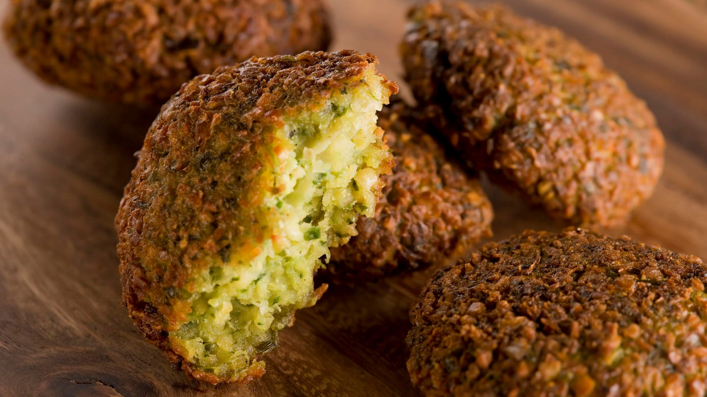
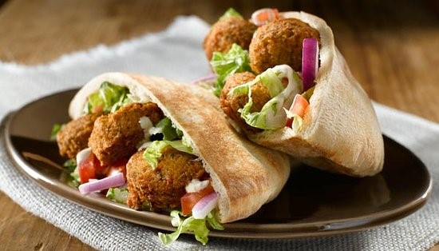

Falafel is a deep-fried ball made from ground chickpeas, fava beans, or both. Falafel has become popular among vegetarians and vegans, as an alternative to meat-based street foods, and is now sold in packaged mixes in health-food stores. While traditionally thought of as being used to make veggie burgers, its use has expanded as more and more people have adopted it as a source of protein. In the United States, falafel's versatility has allowed for the reformulating of recipes for meatloaf, spaghetti and meatballs into vegetarian dishes.
How to eat?
As a traditional Middle Eastern food, falafel is commonly served in a ‘pita’, which acts as a pocket or wrapped in a flatbread known as ‘taboon’. The falafel balls are topped with salads, pickled vegetables, hot sauce, and drizzled with tahini-based sauces. Falafel balls may also be eaten alone as a snack or served as part of a meze (assortment of appetizers).
| Nutritional value per 100 g (3.5 oz) | %Daily Value | |
|---|---|---|
| Energy | 333 kcal | 15% |
| Carbohydrates | 31.84 g | 10% |
| Fat | 17.8 g | 12% |
| Protein | 13.31 g | 20% |
| Calcium | 54 mg | 9% |
| Magnesium | 82 mg | 30% |
| Sodium | 295 g | 30% |
| Potassium | 585 mg | 25% |
| Water | 34.62 g | 1.2% |
|
+ Falafel Island
| + Naf Naf Grill
| + Roti Modern Mediterranean
|